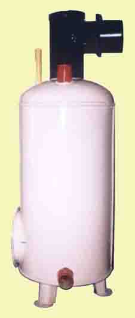
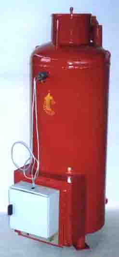
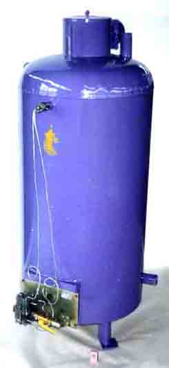
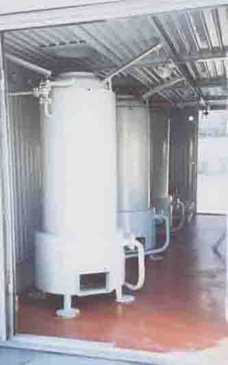

Котлы отопительные газовые
С целью повышения безопасности и удешевления тепловой энергии на заводе "Станкотерм" выпускаются жароводотрубные котлы КЖВГ-10, КЖВГ-20, "Клен", КЖВГ-50, КЖВГ-100 и КЖВГ-200, работающие в системах отопления с естественной и принудительной циркуляцией. Они предназначены для нагрева воды в автономных отопительных системах, водоподогревателях для горячего водоснабжения, для комплектации блочных котельных МТК. Котлы КЖВГ представляют собой сварную конструкцию цилиндрической формы. На передней панели котла устанавливается газогорелочное устройство соответствующей мощности - "Пламя-1", "Арбат", УГТ-41 или УГТ-100 и т.п. Высокий КПД котлов получен за счет сложной, оригинальной конструкции топки и газохода, что позволяет снизить расход газа на 30% по сравнению с другими серийно выпускаемыми котлами.
Клен-Г
КЖВГ-10
КЖВГ-50
КЖВГ-100
КЖВГ-200
| Тип котла | КЖВГ-10 | КЖВГ-20 | Клен-Г | КЖВГ-50 | КЖВГ-100 | КЖВГ-200 |
|---|---|---|---|---|---|---|
| Номинальная мощность, кВт 10 | 10 | 20 | 25 | 50 | 100 | 200 |
| Производительность, Гкал/час | 0,0086 | 0,017 | 0,021 | 0,043 | 0,086 | 0,17 |
| Отапливаемый объем, м3/час | 300 | 600 | 750 | 1500 | 3000 | 6000 |
| Абсолютное давление, мПа | 0,2 | 0,2 | 0,3 | 0,3 | 0,3 | 0,3 |
| Расход газа, м3/час | 1,25 | 2,1 | 2,6 | 5,1 | 10,2 | 20,4 |
| КПД | 89 | 93 | 92 | 92 | 92 | 92 |
| Max t℃ воды | 90 | 90 | 90 | 90 | 90 | 90 |
| Габариты (мм) | 600x(400) | 600x(470) | 600x500 | 670x(590) | 800x(750) | 1100x(1000) |
| Масса не более, кг | 50 | 90 | 85 | 170 | 295 | 800 |
Специалисты ОАО "Станкотерм" по заявке покупателя могут произвести монтаж и наладку автономных газовых котлов на объекте заказчика.